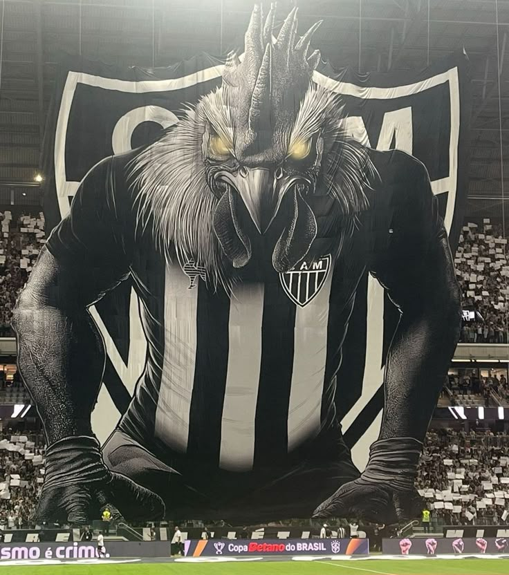

Desenvolvedor focado em criar sites modernos, rápidos e responsivos.
Ver Projetos
O Clube Atlético Mineiro, conhecido como Galo, é um dos clubes mais tradicionais e populares do futebol brasileiro. Fundado em 1908, na cidade de Belo Horizonte, o time possui uma torcida apaixonada e uma história marcada por grandes conquistas, como o Campeonato Brasileiro e a Copa Libertadores da América. O Atlético é reconhecido por sua força em campo, especialmente quando joga em casa, e por revelar grandes jogadores ao longo dos anos.
MC IG é um cantor e compositor brasileiro de funk, conhecido por suas músicas com batidas marcantes e letras que retratam a realidade das periferias, festas e ostentação. Ele ganhou destaque no cenário do funk paulista, principalmente dentro do subgênero “funk ostentação”, conquistando milhões de visualizações nas plataformas digitais. Seu estilo é direto e envolvente, o que ajudou a consolidar seu nome entre os artistas mais ouvidos do gênero no Brasil.
Neymar Jr. é um jogador de futebol brasileiro, reconhecido mundialmente por sua habilidade, criatividade e capacidade de decidir jogos. Revelado pelo Santos, ganhou destaque ainda jovem e conquistou títulos importantes antes de se transferir para o futebol europeu, onde atuou por clubes como Barcelona e Paris Saint-Germain. Pela Seleção Brasileira, é um dos principais nomes de sua geração, acumulando gols e participações em grandes competições. Seu estilo de jogo é marcado por dribles rápidos, visão de jogo e forte presença ofensiva.
Email: guigaugustoteixeira@gmil.com